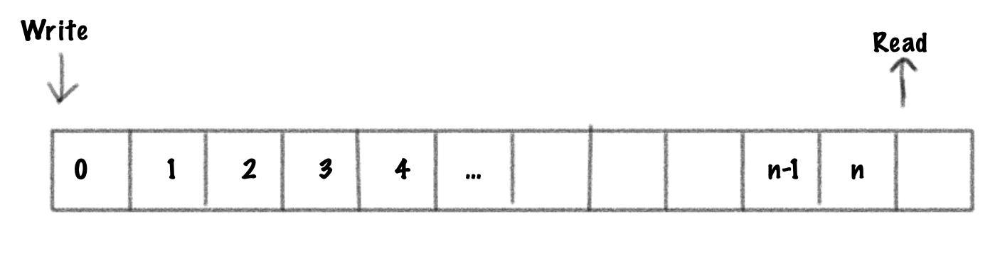
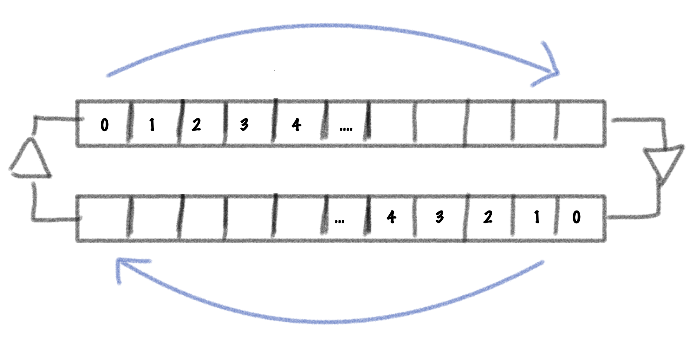
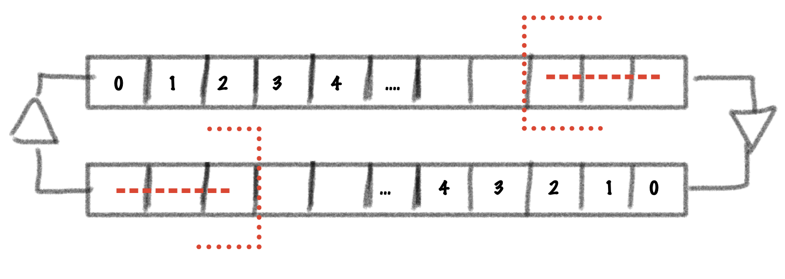
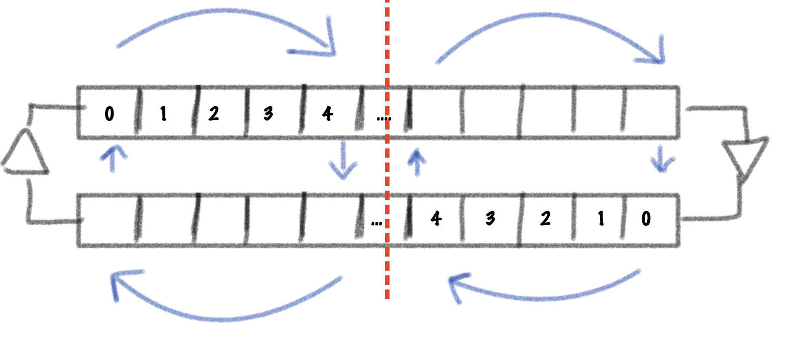

In this series, I will walk through the process of building a bowed string model using a digital waveguide. If you are not familiar with the technique, Julius O. Smith wrote a great book on the subject: Physical Audio Signal Processing. The particular model I will build can also be found in this book here.
One possible way to implement this model would be to implement it exactly as presented using 4 distinct delay lines. This would work quite well for a static model, but since we want to be able to change the delay lines’ lengths in real-time, we will quickly run into some issues.
To understand, let’s look at a basic delay line implementation. The canonical delay line usually consists of a circular buffer and two pointers: one for reading and one for writing. Changing the delay length is as simple as changing the read pointer’s position. This looks something like this:

A simple waveguide can be implemented using two delay lines, one for the right traveling wave and one for the left traveling wave.

Notice how the delay lines are going in opposite directions. Now, if we were to change the waveguide length by reducing both delay line lengths this would look like this:

If the waveguide was modeling a string, we’ve now effectively removed a bit of the right traveling signal from the right end of the string and a bit of the left traveling signal from the left end of the string. This is physically impossible and can introduce discontinuities in the signal. Instead, what we want to achieve is something like this:

Notice how the size of the waveguide does not change and instead, a reflection point is introduced at some point on the string, effectively splitting the waveguide in two. This is attempting to simulate a finger pressing on the string.
To do this, we will implement a system similar to a scattering junction where energy is either reflected or transmitted at the junction of the string and the finger. A possible implementation for this is presented in Vesa Välimäki’s paper Discrete-Time Modeling of Acoustic Tubes Using Fractional Delay Filters. Instead of using an allpass filter to interpolate the signal I have opted to use a simple linear interpolator. Since we want to be able to vary the position of the junction in real-time, we would need to perform extra work to avoid the transient that would be introduced by using an allpass interpolation. A method to eliminate these transients is presented in this paper by Vesa Välimäki, Timo I. Laakso and Jonathan MacKenzie. A C++ implementation can be found in libdsp.
Here it is in action when the gate coefficient is set to 1:

By setting the gate coefficient to < 1, we can simulate a light press on the string which can result in harmonics based on the position of the gate:


Here are some audio examples of the gate in action using a waveguide with 200 samples of delay and a gate positioned in the middle of the string. A triangle pluck is used to excite the string.
Gate coefficient = 0 (open string):
Gate coefficient = 1 (full press):
Gate coefficient = 0.005 (The fundamental quickly morphs into the first harmonic):